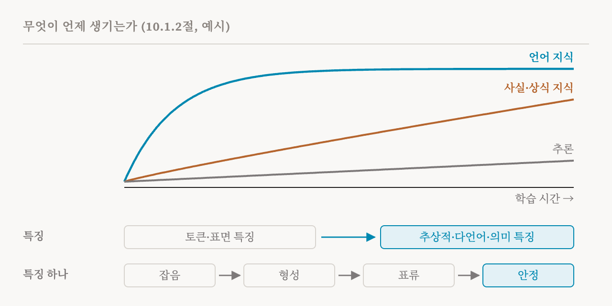
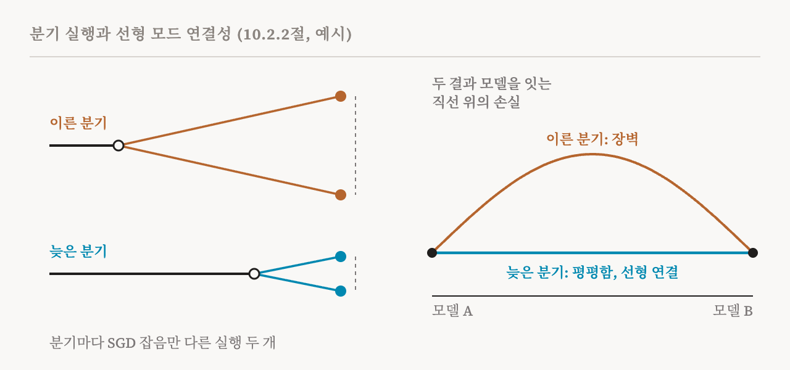

25편은 이 연재가 지금까지 다루지 않은 차원 하나를 예고하며 끝났습니다. 시간입니다. 이번 편은 학습과 데이터에 관한 새 부를 엽니다. 이 책 10장의 앞부분인 10.1절과 10.2절(82–86쪽)입니다.
해석 가능성 연구는 대부분 학습이 끝난 모델을 고정된 것으로 다룹니다. 활성값이 무엇을 표현하는지, 어떤 구성 요소가 어떤 행동을 수행하는지, 개입하면 출력이 어떻게 바뀌는지를 묻는데, 언제나 특정한 체크포인트 하나, 즉 저장해 둔 모델의 사본 하나에서 묻습니다. 하지만 모델은 완성된 채로 세상에 나오지 않습니다. 모델은 학습 과정의 산물입니다. 요즘은 학습 중간의 체크포인트까지 공개하는 모델 모음이 있어서 학습의 경로 전체를 체계적으로 연구할 수 있게 되었습니다. 공개된 Pile 말뭉치로 학습한 Pythia가 그런 예입니다.
이 책은 두 가지 목표를 나눕니다. 종단 분석(longitudinal analysis)은 학습 동역학 자체를 설명할 대상으로 봅니다. 학습하는 동안 메커니즘이 어떻게, 왜 생기고, 바뀌고, 자리 잡고, 사라지는지를 묻습니다. 두 번째 목표는 학습 동역학을 도구로 씁니다. 체크포인트 사이의 변화는 메커니즘을 찾고, 서로 경쟁하는 설명 가운데 하나를 고르고, 나중의 능력이나 실패를 예측하고, 학습에 개입하는 방향을 정하는 데 도움이 됩니다. 이 책은 모델의 내부는 그것이 어떻게 발달했는지에 비추어 볼 때에만 온전히 이해할 수 있다는 Saphra의 주장을 인용합니다. 마지막 체크포인트만 분석하면 거기서 찾은 구조의 기능이나 기원을 잘못 짚을 위험이 있다는 것입니다.
데이터가 정하는 것
능력이 나타나는 순서는 학습 데이터의 통계에 크게 좌우됩니다. 언어 모델이 단어를 익히는 순서는 주로 각 단어가 말뭉치에 얼마나 자주 나오는지로 예측됩니다. 아이들은 다릅니다. 아이들이 단어를 배우는 순서는 단어가 얼마나 구체적인지, 얼마나 긴지 같은 요인에도 달려 있습니다. 형용사를 늘어놓는 일반적인 순서처럼 정도의 차이가 있는 선호도 비슷한 일정으로 말뭉치 통계에서 배웁니다.
이 책은 이것을 더 일반적인 패턴인 분포 단순성 편향(distributional simplicity bias) 아래에 놓습니다. 흔히 쓰는 학습 방법인 확률적 경사 하강법(SGD)으로 학습한 신경망은 데이터의 저차 통계를 고차 통계보다 먼저 배웁니다. 대략 말하면 저차 통계는 각 토큰이 얼마나 자주 나오는지, 어떤 토큰들이 서로 붙어 나오는 경향이 있는지 같은 것입니다. 고차 통계는 그보다 길고 복잡한 조합에 관한 것입니다. 언어 모델에서는 토큰 n개가 이어진 짧은 묶음인 n-그램의 빈도가 임베딩 벡터의 통계적 적률에 대응합니다. 그래서 학습 초기의 모델은 단순한 토큰 사이의 상호작용을 잘 근사합니다. 더 복잡한 구조는 나중에 맞춥니다.
데이터가 어떤 능력의 원인이라는 것을 보이기는 둘이 관련 있다는 것을 보이기보다 어렵습니다. 여러 연구가 데이터 통계와 최종 모델의 능력 사이에 강한 상관이 있음을 발견했습니다. 예를 들어 2022년의 한 연구는 모델이 사전 학습 데이터에 더 자주 나오는 숫자일수록 퓨샷 산수를 더 잘한다는 것을 발견했습니다. 데이터 통계가 사실에 관한 예측에 미치는 인과적 효과를 직접 추정할 수도 있습니다. 가장 강한 증거는 학습 데이터를 통제된 방식으로 바꿔 보는 데서 나오겠지만, 비용이 많이 들어서 현실적인 규모에서는 드물게만 이루어집니다. 눈에 띄는 예외인 2026년의 Deep Ignorance 연구는 파라미터 69억 개짜리 모델 세 개를 각각 5,500억 토큰으로, 데이터를 서로 다르게 걸러서 학습시켰습니다. 그리고 데이터를 걸러 내면 생물학적 위험 능력의 대리 지표가 되는 지식을 없앨 수 있음을 보였습니다. 28편에서 다시 다룹니다.
더 작은 합성 실험은 데이터의 영향이 얼마나 구체적일 수 있는지 보여 줍니다. 2022년의 한 연구는 합성 시퀀스 과제로 트랜스포머를 학습시켜서, 프롬프트 안의 예시를 활용하는 맥락 내 학습이 데이터가 알맞은 성질을 가질 때에만 생긴다는 것을 발견했습니다. 두 가지가 각각 꼭 필요했습니다. 하나는 같은 범주의 항목이 시퀀스 안에 고르게 퍼지지 않고 뭉쳐서 나타나는 뭉침성(burstiness)입니다. 다른 하나는 드문 범주들이 길게 늘어선 꼬리입니다. 같은 내용을 뭉침 없이 고르게 만든 데이터에서는 그 대신 가중치 내 학습이 일어났습니다. 답을 맥락에서 읽는 대신 파라미터에 저장하는 것입니다. 몇몇 범주는 아주 흔하고 많은 범주는 드문 지프 분포에서는 두 가지 학습이 함께 존재할 수 있었습니다. 사실에 관한 지식도 비슷합니다. 사실 지식을 익히는 과정은 긴 정체기를 거치는데, 그 모양은 각 개체가 데이터에 얼마나 자주 나오는지에 따라 정해집니다.
특징은 생기고, 자리 잡고, 움직인다
학습 과정에서 특징을 따라가는 데에는 고유한 기술적 어려움이 있습니다. 체크포인트마다 표현이 서로 다른 기저에 놓일 수 있어서, 한 체크포인트에서 찾은 특징에 다른 체크포인트의 짝이 저절로 정해지지 않습니다. 21편의 로짓 렌즈가 층 사이의 불일치 때문에 약해지는 것과 비슷합니다. 중간 층은 마지막 층과 다른 방식으로 정보를 정리하기 때문입니다. 한 체크포인트에서 학습한 프로브나 희소 오토인코더도 다른 체크포인트에 적용하면 같은 방식으로 성능이 떨어집니다. 종단 분석 방법들은 주로 이 대응 문제를 어떻게 푸는지에서 서로 갈립니다.
24편의 모델 비교 방법이 여기서 쓸모가 있고, 이런 방법과 다른 연구들이 함께 대체로 일관된 순서를 찾았습니다. 언어 지식은 일찍, 빠르게 익힙니다. 사실과 상식에 관한 지식은 천천히 쌓입니다. 추론 능력은 사전 학습 내내 약하게 남습니다. 특징 수준의 연구는 이 순서를 더 자세히 채웁니다. 토큰과 표면적 통계에 대응하는 특징이 먼저 생깁니다. 추상적이고 언어를 넘나드는 의미적 특징은 나중에 생깁니다. 특징 하나하나도 잡음 섞인 무질서한 활성에서 시작해 뚜렷한 의미를 가진 일관된 특징으로 발달합니다.

형성 뒤에는 정착이 따릅니다. 의미가 정해진 뒤에도 특징의 방향은 한동안 계속 움직이다가 결국 안정됩니다. 모듈마다 수렴하는 속도도 다릅니다. 그리고 일단 생긴 표현과 그것을 익히는 시점은 무작위 시드가 달라도 대체로 같습니다. Pythia의 사전 학습을 50번 반복한 연구가 이를 확인했습니다.
하지만 이 책은 능력이 안정적이라고 해서 그 구현까지 안정적인 것은 아니라고 강조합니다. 알고리즘은 그대로인데 그것을 수행하는 구성 요소가 바뀔 수 있습니다. 메커니즘이 다른 용도로 바뀌기도 합니다. 19편의 유도 헤드는 학습이 진행되면서, 퓨샷 맥락 내 학습을 주도하게 되는 함수 벡터 헤드로 바뀝니다. 구조가 아예 사라지기도 합니다. 앞에서 말한 2022년 연구의 합성 설정에서 맥락 내 학습은 일시적이었습니다. 생겨났다가 학습 손실이 아직 줄고 있는 동안 가중치 내 학습에 자리를 내주었고, 정칙화가 그것이 얼마나 오래 유지되는지에 영향을 주었습니다. 특징 표류는 24편이 경고했던 모델 비교의 거짓 양성을 만들어 낼 수도 있습니다. 더 넓게 보면, 이 모든 것이 기계적 주장이 시간적으로 어디까지 통하는지를 제한합니다. 한 체크포인트에서 검증한 설명이 같은 모델의 다른 체크포인트에서는 맞지 않을 수 있습니다.
도구로서의 시간
이 책의 두 번째 목표는 학습 경로를 측정 도구로 바꿉니다. 기계적 해석 가능성에서 이런 관점은 비교적 새롭지만, 생각 자체는 더 오래되었습니다. 초기의 이론 연구는 신경망의 입력과 출력 사이 관계의 서로 다른 특이 모드, 대략 말해 서로 독립적인 패턴들이 서로 다른 속도로 학습되며, 강한 것일수록 먼저 학습되는 경향이 있음을 보였습니다. 그래서 무엇을 먼저 배우는지가 과제의 구조에 대해 무언가를 알려 줍니다. SVCCA 같은 표현 비교 방법은 학습하는 동안 층과 표현이 언제 수렴하는지 측정합니다.
변화를 먼저 시간에서, 다음으로 모델 안에서 짚어 내는 방법이 세 가지 있습니다. 첫째는 학습 경로를 따라가는 귀속입니다. 30편에서 설명할 TracIn은 학습 경로의 여러 체크포인트에서 계산한 기울기의 곱을 더해서, 어떤 학습 예시가 어떤 예측에 미친 영향을 추정합니다. 체크포인트마다 따로 기여하므로, 그 기여들을 살펴보면 그 예시가 언제 가장 큰 영향을 미쳤는지 알 수 있습니다.
둘째는 맥락 속 토큰 하나의 학습 곡선입니다. 보통 학습에 쓰지 않은 텍스트에서 체크포인트마다 측정하며, 이 책이 꼽는 가장 세밀한 도구입니다. 2024년의 한 연구는 다섯 번의 사전 학습에서 학습에 쓰지 않은 토큰 100만 개의 곡선을 뽑았고, 각각을 그 토큰을 처음 익힌 시점, 나중에 손실이 다시 나빠질 가능성, 한 번의 학습 안에서와 여러 번의 학습 사이에서 흔들리는 정도로 요약했습니다. 자주 나오는 토큰, 그리고 짧고 흔한 맥락 속의 토큰은 더 일찍 익히고, 최종 놀람도가 더 낮고, 덜 흔들립니다. 놀람도는 그 토큰이 모델에게 얼마나 뜻밖인지를 재는 손실입니다. 단계로 보면, 모델은 짧게 반복되는 구절을 길고 일관된 텍스트보다 먼저 배웁니다. n-그램을 먼저 배우고 드문 경우의 예측을 천천히 다듬는다는 설명과 맞습니다. 개별 토큰의 손실이 갑자기 오르거나 내리는 일도 있는데, 이런 일은 여러 번의 학습에서 같은 시점에 되풀이되어, 27편에서 다룰 전이의 후보를 알려 줄 수 있습니다.
셋째는 변화를 구성 요소에서 짚어 내는 것입니다. 변화가 일어난 시점을 찾고 나면, 그 구간에 바뀐 구성 요소가 메커니즘의 후보가 됩니다. 2025년의 한 연구는 27편에서 소개할, 모델의 실질적인 복잡도를 재는 국소 학습 계수를 세분화한 버전들을 어텐션만으로 이루어진 작은 2층 트랜스포머의 어텐션 헤드 하나하나에 적용했습니다. 가중치로 세분화한 버전은 이 척도를 한 헤드의 파라미터로 한정합니다. 데이터로 세분화한 버전은 고른 데이터 일부에서 이 척도를 계산합니다. 학습이 진행되면서 헤드마다 가중치로 세분화한 곡선이 서로 벌어지는데, 헤드의 종류마다 뚜렷이 다른 모양을 보여서, 헤드들이 어떻게 역할을 나눠 갖는지 알 수 있습니다. 데이터로 세분화한 버전은 헤드가 무엇에 특화되었는지 보여 줍니다. 코드에서는 1층의 멀티그램 헤드 가중치를 흔들어도 유도 헤드를 흔들 때보다 손실이 훨씬 덜 나빠집니다.
같은 분석은 전에 기록된 적 없는 멀티그램 회로도 찾았습니다. 멀티그램은 데이터에 흔히 나오는 토큰 묶음으로, 그 토큰들이 사이를 두고 떨어져 나타날 수도 있습니다. 가중치로 세분화한 계수가 높은 헤드는 멀티그램을 더 많이 외우는 경향이 있습니다. 값이 낮은 헤드는 유도나 괄호 짝 맞추기 같은 단순한 알고리즘을 따르는 경향이 있습니다. 2022년 유도 헤드 연구의 유도 점수와 달리, 이 척도는 헤드의 종류를 미리 정해 둘 필요가 없습니다. 하지만 추정하는 데 계산이 많이 들고, 아직 장난감 모델에서만 시연되었습니다.
분기 실행
학습 경로로 할 수 있는 가장 기본적인 실험은 분기 실행입니다. 같은 체크포인트에서 이어지는 학습을 두 개 이상 시작하면서 SGD 잡음, 데이터 순서, 무작위 시드 같은 요인 하나만 바꾸고, 그렇게 나온 모델들을 비교합니다. 비교하는 표준적인 방법은 선형 모드 연결성입니다. 가중치 공간에서 두 신경망의 파라미터를 잇는 직선을 따라 손실이 내내 낮게 유지되면, 즉 둘 사이에 손실 장벽이 거의 없으면 두 신경망은 선형 모드 연결되어 있다고 합니다. 2020년의 한 연구는 이것으로 학습이 SGD 잡음에 얼마나 민감한지를 쟀습니다. 여러 체크포인트에서 매번 다른 잡음으로 학습을 다시 시작했습니다. 학습 초기에는 실행들이 손실의 서로 다른 골짜기에 이를 수 있었습니다. 나중에는 선형 모드 연결된 해에 이르는 경향이 있었습니다. 학습의 결과가 SGD 잡음에 흔들리지 않게 된 것입니다.

다른 변화도 같은 설계에 들어맞습니다. 학습 초기에 데이터를 망가뜨리면, 2019년의 한 연구에서는 이미지를 흐리게 만들었는데, 나중에 같은 방식으로 망가뜨렸을 때는 생기지 않는 오래가는 결함이 생깁니다. 신경망에 결정적 학습 시기가 있다는 뜻입니다. 여러 무작위 시드로 분기하면 학습 설정 자체의 성질과 한 번의 실행에서 우연히 생긴 일을 구분할 수 있습니다. 유도 회로가 층 하나 안에서 생겨날 수 있게 한 19편의 번진 키 변형도, 구조를 바꾼다는 점만 다를 뿐 같은 설계입니다.
모드 연결성은 기계적으로 해석되기도 했습니다. 2023년의 한 연구는 입력의 같은 변환에 똑같이 영향을 받지 않는 두 모델을 기계적으로 비슷하다고 정의했습니다. 그리고 뉴런의 순서를 바꿔도 선형으로 연결될 수 없는 두 해는 기계적으로 달라야 한다고 추측했고, 직접 만든 기계적으로 다른 해들이 휘어진(2차) 경로로는 연결되지만 직선으로는 연결되지 않음을 발견했습니다. 이 해석에 따르면 두 체크포인트 사이에 손실 장벽이 있다는 것은 메커니즘이 다르다는 신호입니다. 이 책은 반대 방향의 주의도 덧붙입니다. 장벽이 없다고 해서 메커니즘이 같다는 보장은 없습니다.
설명은 얼마나 오래 유효한가
학습 동역학을 이용하면 기계적 주장이 체크포인트 하나보다 넓은 범위에서 성립하는지 물을 수 있습니다. 학습된 모델 내부에 대한 설명, 예를 들어 어떤 특징의 방향은 그 자체로는 그 메커니즘이 같은 모델의 다른 학습 단계에서도, 따로 학습한 같은 종류의 모델에서도 같은 방식으로 작동하는지 알려 주지 않습니다. 학습 동역학 분석은 이웃한 체크포인트나 시드가 다른 실행에서 그 설명을 다시 시험할 수 있습니다. 그러면 학습이 계속되어도 설명이 얼마나 안정적인지, 학습 과정의 차이에 얼마나 민감한지 알 수 있습니다. 20편의 안정성 차원을 시간으로 넓힌 것입니다.
| 목표 | 질문 | 예 |
|---|---|---|
| 설명할 대상 | 메커니즘은 어떻게 생기고, 바뀌고, 자리 잡고, 사라지는가? | 익히는 순서, 특징의 형성과 표류, 용도가 바뀌거나 잠깐만 있는 구조 |
| 도구 | 시간에 따른 변화가 모델에 대해 무엇을 알려 주는가? | 체크포인트별 귀속, 토큰별 학습 곡선, 세분화한 복잡도 척도, 분기 실행 |
| 용어 | 뜻 |
|---|---|
| 학습 동역학 | 학습하는 동안 모델의 행동과 내부가 바뀌는 방식 |
| 체크포인트 | 학습 도중 어느 시점에 저장한 모델의 사본 |
| 종단 분석 | 같은 모델을 여러 체크포인트에 걸쳐 연구하는 것 |
| 분포 단순성 편향 | 데이터의 저차 통계를 고차 통계보다 먼저 배우는 경향 |
| 뭉침성 | 같은 종류의 항목이 고르게 퍼지지 않고 뭉쳐서 나타나는 성질 |
| 가중치 내 학습 | 배운 것을 맥락에서 읽는 대신 파라미터에 저장하는 것 |
| 대응 문제 | 한 체크포인트의 특징을 다른 체크포인트의 같은 특징과 짝짓는 문제 |
| 특징 표류 | 의미가 정해진 뒤에도 특징의 방향이 계속 움직이는 것 |
| 토큰별 학습 곡선 | 맥락 속 토큰 하나의 손실을 학습 내내 따라간 것 |
| 세분화한 국소 학습 계수 | 구성 요소 하나나 데이터 일부로 한정한 복잡도 척도 |
| 분기 실행 | 한 체크포인트에서 요인 하나만 바꿔 이어서 학습한 실행들 |
| 선형 모드 연결성 | 두 모델의 파라미터를 잇는 직선을 따라 손실이 낮게 유지되는 것 |
| 결정적 학습 시기 | 데이터의 문제가 오래가는 해를 끼치는 학습 초기의 구간 |
27편에서는 학습이 점진적이지 않게 되는 순간을 봅니다. 갑작스러운 도약, 그로킹, 그리고 그런 일이 왜 일어나는지입니다.